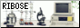

nearby

incredible layout which inspired my own and bursting with passioniate pages about biology and media
oozing with so much crunchy low poly charm i want to CONSUME its goofy trinkets, shrines and thoughts


calm radio and soothing palette is so relaxing - some lovely shrines and very evocative writing
unapologetically bleeding bright colours and dumb sfx at every turn. it's so beautifully eclectic and creative


cycle ring neighbour whos website is buzzing with personality, style and their interests (and the first person to link me :D)
fellow 2006 brit who gets obsessed with media. the website's early internet vibes really struck a chord with me


i love the cute comics stylised like the website, the little guinea pig dollhouse and the freaking awesome spooky zone
the ridiculous amount of graphics throughout tickles my brain and THE SHRINES ARE INCREDIBLE


really well-written articles and shrines about discourse and personal experiences but also fellow lego monkie kid enjoyer
off-grid

really awesome solaris vibe, hilarious 'guestbook', whimsical articles and a really fun secret to discover
graffiti, photography and the absurdly extensive cave system and dreamwiki here are extremely charming

ridiculously cute windows vibe, a fun made-up creature report and some cool projects and media logs
more to come as i explore more of the indie web...